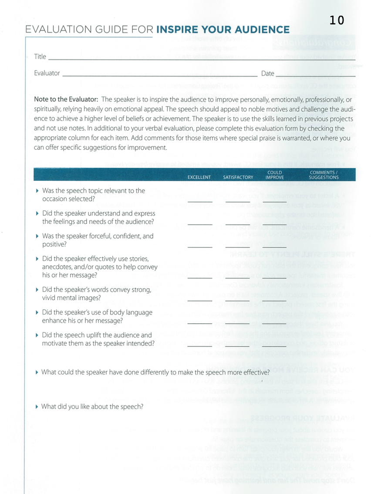

<!-- Main -->
	<div id="main" class="wrapper style1">
		<div class="container">
			<section>
				<div class="10u -1u">
					<header class="major">
						<!-- <h2>Blog</h2> -->
						<!-- <span class="byline">Integer sit amet pede vel arcu aliquet pretium</span> -->
					</header>
					<h2>What is this speech about ?</h2>
					<ul>
						<li>An inspirational speech motivates an audience to improve personally, emotionally professionally or spiritually and relies heavily on emotional appeal.</li>
						<li>It brings the audience together in a mood of fellowship and shared desire, builds the audience’s enthusiasm, then proposes a change or plan and appeals to the audience to adopt this change or plan.</li>
						<li>This speech will last longer than your previous talks, so make arrangements in advance with your Vice President Education for extra time.</li>

</ul><br>
<h2>Objectives</h2>
<ul>

<li>To inspire the audience by appealing to noble motives and challenging the audience to achieve a higher level of beliefs or achievement.</li>
	 <li>Appeal to the audience’s needs and emotions, using stories, anecdotes and quotes to add drama.</li>
	 <li>Avoid using notes.</li>
	 <li>Time: Eight to 10 minutes.</li>
</ul><br>
<h2>Evaluation</h2>
Download: <a href="Evaluation10.pdf"></a>
	<br>

	<h2>More Resources:</h2>

	<li><a href="Inspire_audience.pdf">Resource from Toastmasters</a></li>
		<li>  <a href="http://sixminutes.dlugan.com/audience-analysis/">Analyze your Audience</a></li>
<li> <a href="http://sixminutes.dlugan.com/toastmasters-speech-1-ice-breaker-icebreaker/">Ethos, Pathos and Logos of Public Speaking</a></li>


				</div>
			</section>
		</div>
	</div>
